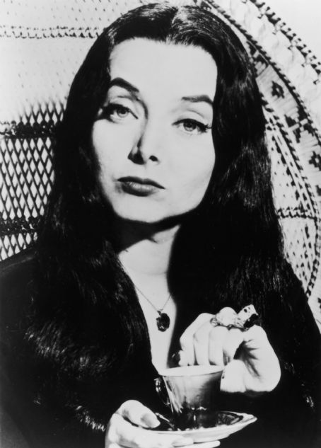

Morticia Addams

Morticia Addams est le personnage central de la série. Dans la série de 1964, elle est le pilier familial: elle est là pour réunir la famille, pour s'occuper des plantes ... Dans la série, son rôle est très "nouricier" voir bourgeois.